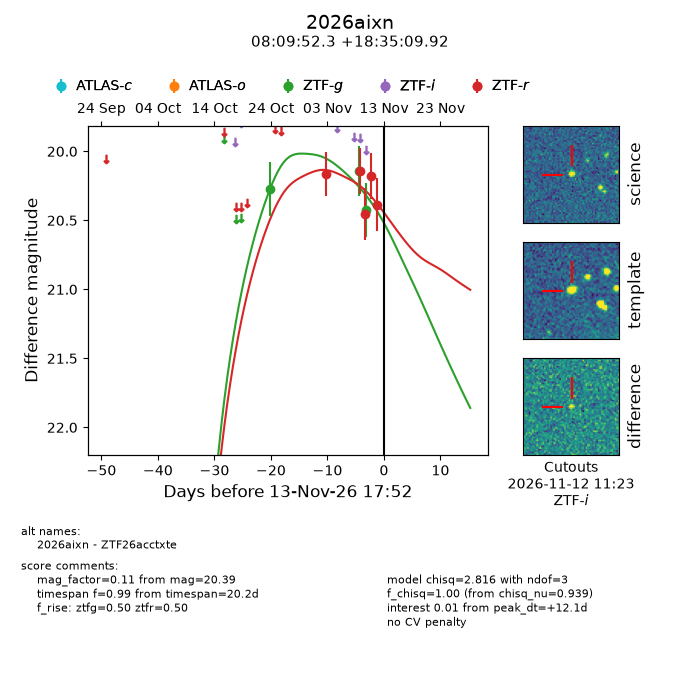
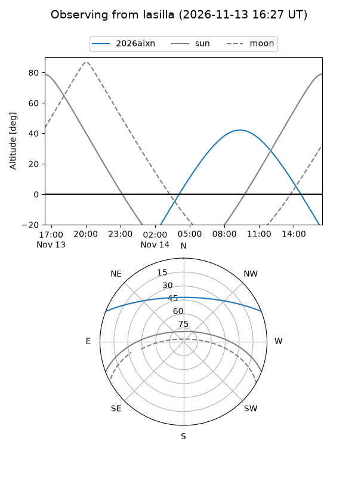
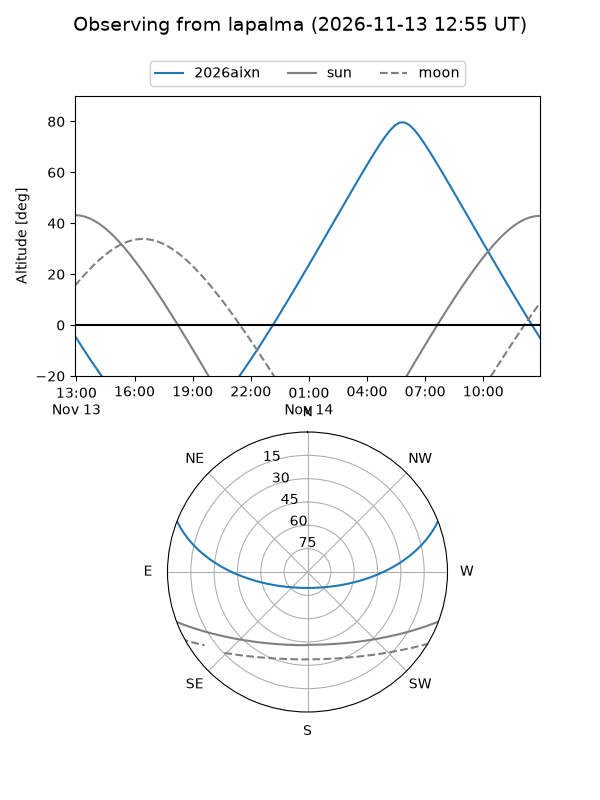
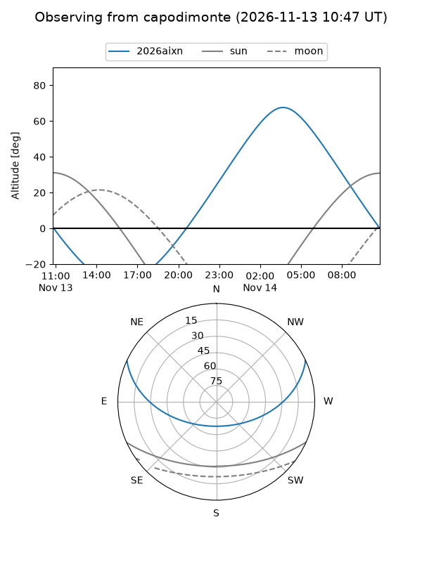
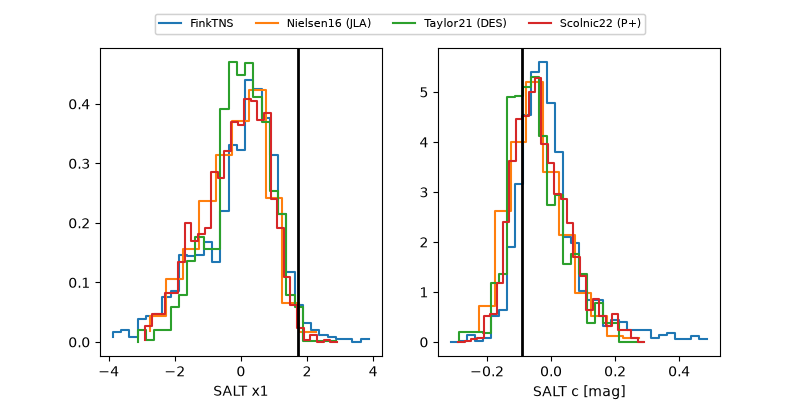

2026aixn
Target 2026aixn at 2026-11-13 17:58
Aliases and brokers:
FINK-ZTF: ztf.fink-portal.org/ZTF26acctxte
Lasair-ZTF: lasair-ztf.lsst.ac.uk/objects/ZTF26acctxte
ALeRCE-ZTF: alerce.online/object/ZTF26acctxte
YSE-PZ: ziggy.ucolick.org/yse/transient_detail/2026aixn
TNS name: wis-tns.org/object/2026aixn
Direct TNS query: direct search
alt names
ZTF26acctxte (ztf,fink_ztf)
2026aixn (tns,yse)
Coordinates:
equatorial (ra, dec) = 122.4679,+18.58609
equatorial (HMS+DMS) = 08:09:52.29,+18:35:09.92
galactic (l, b) = (204.1070,+25.36790)
Flags:
peak dt: +12.1
Photometry:
last ztfg=20.42, ztfr=20.39
3 ztfg, 5 ztfr detections
Lightcurve

Visibility



Additional plots
